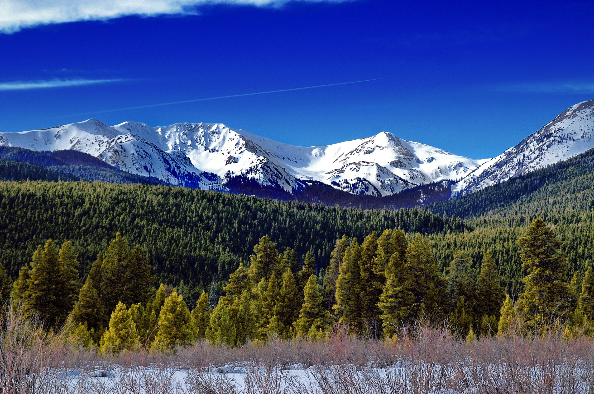
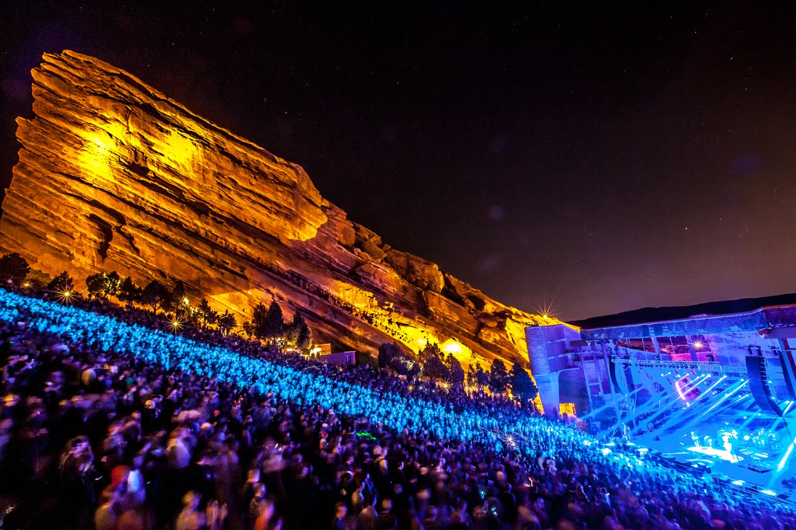
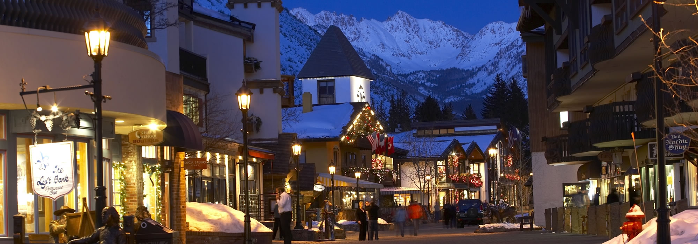

Denver
I first went to a convention in Denver, CO. I've never been here before, but they call it the mile high city. It was fun. I saw fire works in "civic park." There is a street mall that has buses. And fortunately ComicCon was there too. I took a peek. Aenean elementum tristique lectus, et pharetra orci venenatis a. Duis eu tortor ac libero laoreet sollicitudin eu sit amet nibh. Nunc sodales laoreet orci ut commodo. Quisque elit velit, vulputate et dui a, bibendum aliquam leo. Mauris id efficitur velit. Nunc nibh justo, imperdiet non mattis at, pulvinar sit amet mi. Sed felis tortor, posuere vel sapien gravida, ultricies gravida mi. Nulla ante neque, aliquam ac commodo ac, dignissim ut sem. Cras sit amet ligula nec leo blandit ultricies.
I also visited the natural ampatheater created out of red rock. They call it Red Rock. It's huge and beautiful. Aenean elementum tristique lectus, et pharetra orci venenatis a. Duis eu tortor ac libero laoreet sollicitudin eu sit amet nibh. Nunc sodales laoreet orci ut commodo. Quisque elit velit, vulputate et dui a, bibendum aliquam leo. Mauris id efficitur velit. Nunc nibh justo, imperdiet non mattis at, pulvinar sit amet mi. Sed felis tortor, posuere vel sapien gravida, ultricies gravida mi. Nulla ante neque, aliquam ac commodo ac, dignissim ut sem. Cras sit amet ligula nec leo blandit ultricies.
Finally, I took a side trip to Vail. This quaint small swiss villge was a delight to walk. Human scale, pedestrain friendly. And I took to tram up the mountian for a birds-eye view. Carefull, you will get dizzy at such a high altitude without the oxygen levels so thin. Aenean elementum tristique lectus, et pharetra orci venenatis a. Duis eu tortor ac libero laoreet sollicitudin eu sit amet nibh. Nunc sodales laoreet orci ut commodo. Quisque elit velit, vulputate et dui a, bibendum aliquam leo. Mauris id efficitur velit. Nunc nibh justo, imperdiet non mattis at, pulvinar sit amet mi. Sed felis tortor, posuere vel sapien gravida, ultricies gravida mi. Nulla ante neque, aliquam ac commodo ac, dignissim ut sem. Cras sit amet ligula nec leo blandit ultricies.